2025 Advanced Higher Chemistry - Paper 1 questions
Source: Scottish Qualifications Authority (SQA) / Qualifications Scotland. This is a StemInteract HTML companion, not an official HTML edition. Selectable text is supplied alongside original page images. Use the images or original PDF for equations, powers, fractions, vector notation, tables and diagrams; text extraction cannot fully preserve mathematical layout.
Jump to a question
PDF page 1
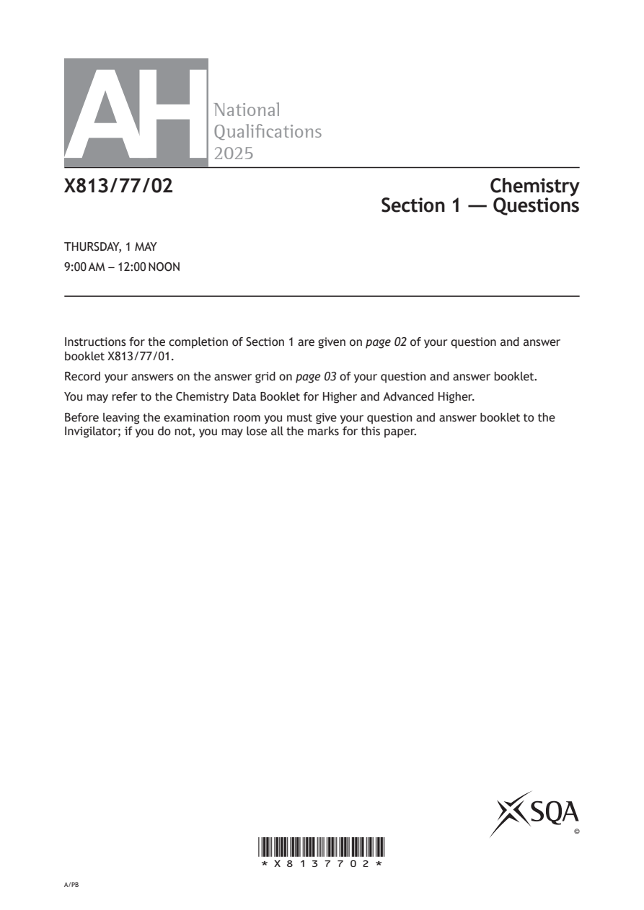
Selectable page text
AH
National
Qualications
2025
X813/77/02 Chemistry
Section 1 — Questions
THURSDAY, 1 MAY
9:00 AM – 12:00 NOON
Instructions for the completion of Section 1 are given on page 02 of your question and answer
booklet X813/77/01.
Record your answers on the answer grid on page 03 of your question and answer booklet.
You may refer to the Chemistry Data Booklet for Higher and Advanced Higher.
Before leaving the examination room you must give your question and answer booklet to the
Invigilator; if you do not, you may lose all the marks for this paper.
©
*X8137702*
A/PBPDF page 2
Paper 1, Question 1Paper 1, Question 2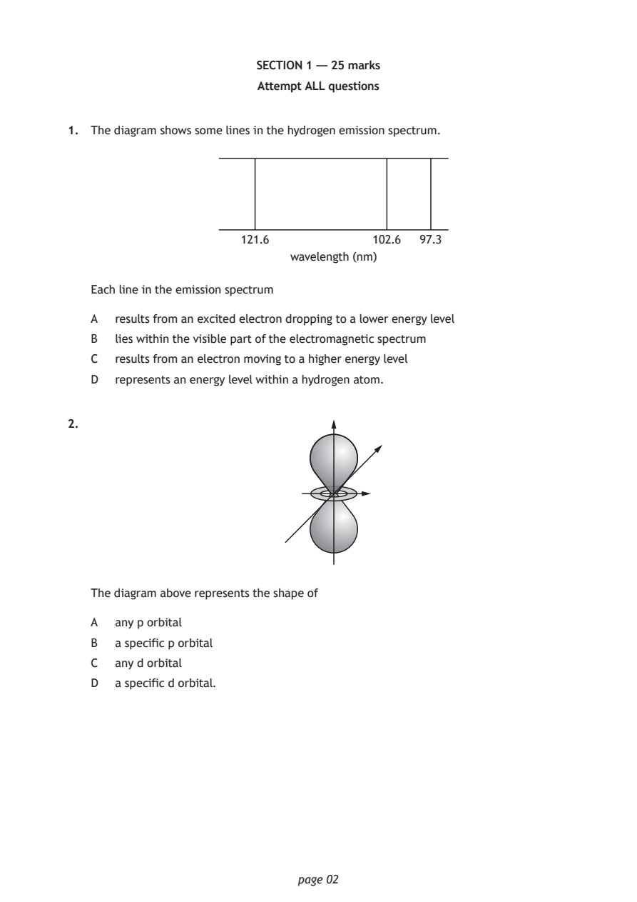
Selectable page text
SECTION 1 — 25 marks
Attempt ALL questions
1. The diagram shows some lines in the hydrogen emission spectrum.
121.6 102.6 97.3
wavelength (nm)
Each line in the emission spectrum
A results from an excited electron dropping to a lower energy level
B lies within the visible part of the electromagnetic spectrum
C results from an electron moving to a higher energy level
D represents an energy level within a hydrogen atom.
2.
The diagram above represents the shape of
A any p orbital
B a specific p orbital
C any d orbital
D a specific d orbital.
page 02PDF page 3
Paper 1, Question 3Paper 1, Question 4Paper 1, Question 5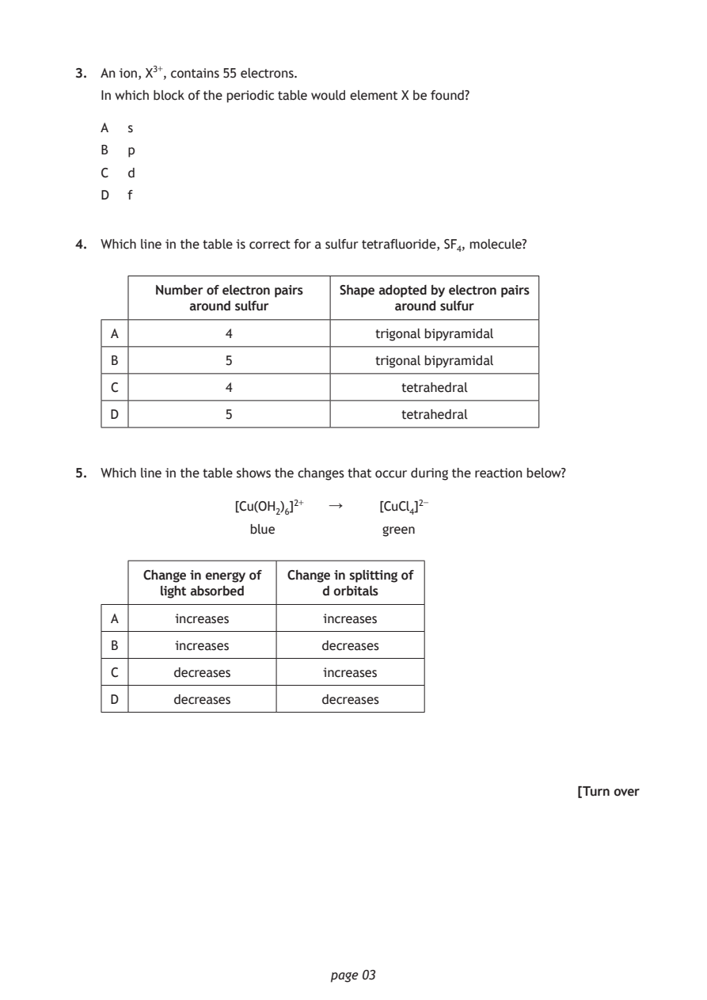
Selectable page text
3. An ion, X³⁺, contains 55 electrons.
In which block of the periodic table would element X be found?
A s
B p
C d
D f
4. Which line in the table is correct for a sulfur tetrafluoride, SF₄, molecule?
Number of electron pairs Shape adopted by electron pairs
around sulfur around sulfur
A 4 trigonal bipyramidal
B 5 trigonal bipyramidal
C 4 tetrahedral
D 5 tetrahedral
5. Which line in the table shows the changes that occur during the reaction below?
[Cu(OH₂)₆]²+ ↓ [CuCl₄]²⁻
blue green
Change in energy of Change in splitting of
light absorbed d orbitals
A increases increases
B increases decreases
C decreases increases
D decreases decreases
[Turn over
page 03PDF page 4
Paper 1, Question 6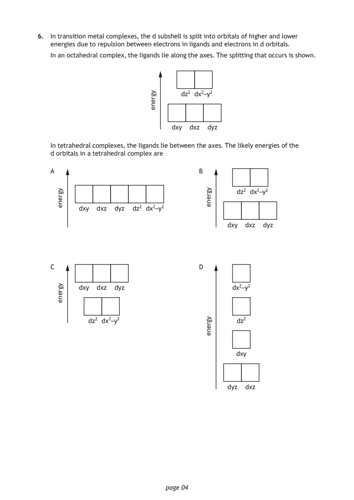
Selectable page text
6. In transition metal complexes, the d subshell is split into orbitals of higher and lower
energies due to repulsion between electrons in ligands and electrons in d orbitals.
In an octahedral complex, the ligands lie along the axes. The splitting that occurs is shown.
page 04
ygrene dz² dx²–y²
dxy dxz dyz
In tetrahedral complexes, the ligands lie between the axes. The likely energies of the
d orbitals in a tetrahedral complex are
ygrene
A
dxy dxz dyz dz² dx²–y²
ygrene
C
dxy dxz dyz
dz² dx²–y²
ygrene
D
dx²–y²
dz²
dxy
dyz dxz
ygrene
B
dz² dx²–y²
dxy dxz dyzPDF page 5
Paper 1, Question 7Paper 1, Question 8Paper 1, Question 9Paper 1, Question 10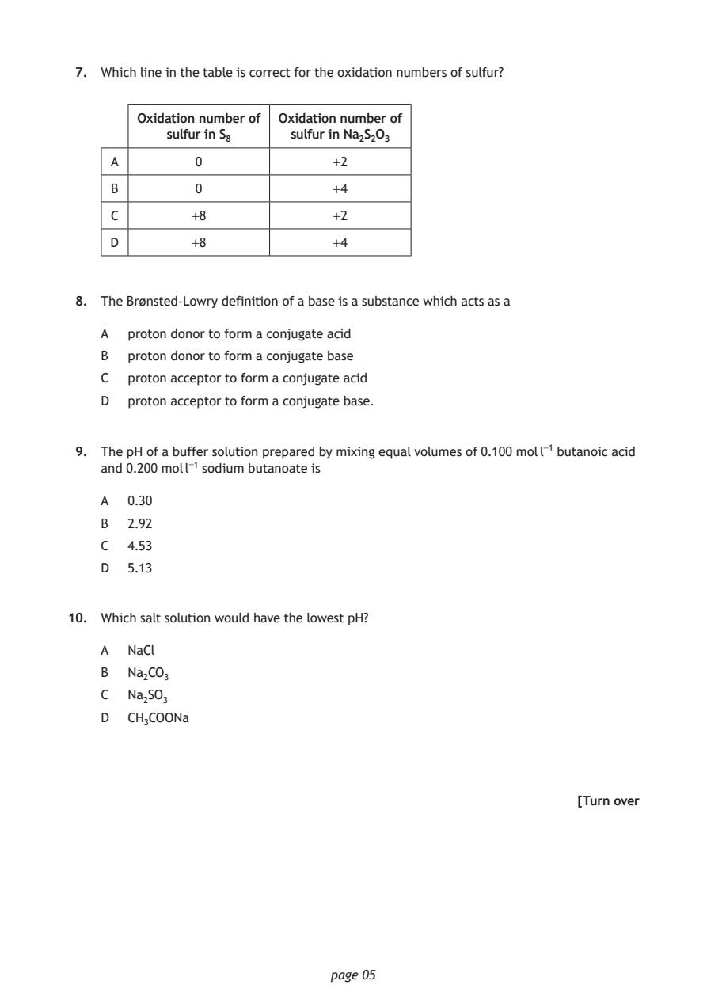
Selectable page text
7. Which line in the table is correct for the oxidation numbers of sulfur?
Oxidation number of Oxidation number of
sulfur in S₈ sulfur in Na₂S₂O₃
A 0 +2
B 0 +4
C +8 +2
D +8 +4
8. The Brønsted-Lowry definition of a base is a substance which acts as a
A proton donor to form a conjugate acid
B proton donor to form a conjugate base
C proton acceptor to form a conjugate acid
D proton acceptor to form a conjugate base.
9. The pH of a buffer solution prepared by mixing equal volumes of 0.100 mol l⁻¹ butanoic acid
and 0.200 mol l⁻¹ sodium butanoate is
A 0.30
B 2.92
C 4.53
D 5.13
10. Which salt solution would have the lowest pH?
A NaCl
B Na₂CO₃
C Na₂SO₃
D CH₃COONa
[Turn over
page 05PDF page 6
Paper 1, Question 11Paper 1, Question 12Paper 1, Question 13Paper 1, Question 14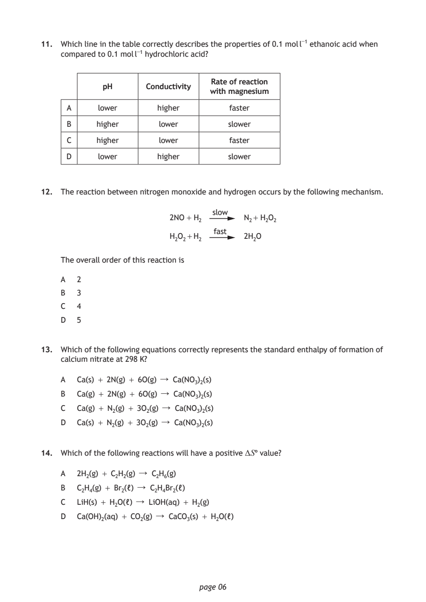
Selectable page text
11. Which line in the table correctly describes the properties of 0.1 mol l⁻¹ ethanoic acid when
compared to 0.1 mol l⁻¹ hydrochloric acid?
Rate of reaction
pH Conductivity
with magnesium
A lower higher faster
B higher lower slower
C higher lower faster
D lower higher slower
12. The reaction between nitrogen monoxide and hydrogen occurs by the following mechanism.
slow
2NO + H₂ N₂+ H₂O₂
fast
H₂O₂+H₂ 2H₂O
The overall order of this reaction is
A 2
B 3
C 4
D 5
13. Which of the following equations correctly represents the standard enthalpy of formation of
calcium nitrate at 298 K?
A Ca(s) + 2N(g) + 6O(g) ↓ Ca(NO₃)₂(s)
B Ca(g) + 2N(g) + 6O(g) ↓ Ca(NO₃)₂(s)
C Ca(g) + N₂(g) + 3O₂(g) ↓ Ca(NO₃)₂(s)
D Ca(s) + N₂(g) + 3O₂(g) ↓ Ca(NO₃)₂(s)
14. Which of the following reactions will have a positive ΔS° value?
A 2H₂(g) + C₂H₂(g) ↓ C₂H₆(g)
B C₂H₄(g) + Br₂(ℓ) ↓ C₂H₄Br₂(ℓ)
C LiH(s) + H₂O(ℓ) ↓ LiOH(aq) + H₂(g)
D Ca(OH)₂(aq) + CO₂(g) ↓ CaCO₃(s) + H₂O(ℓ)
page 06PDF page 7
Paper 1, Question 15Paper 1, Question 16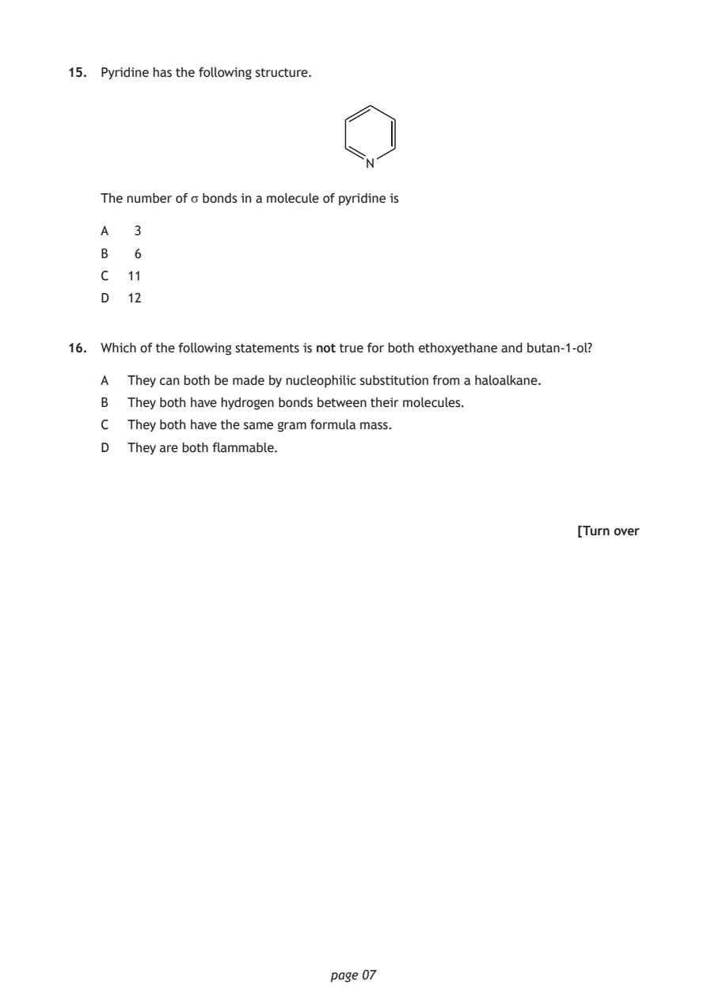
Selectable page text
15. Pyridine has the following structure.
N
The number of σ bonds in a molecule of pyridine is
A 3
B 6
C 11
D 12
16. Which of the following statements is not true for both ethoxyethane and butan-1-ol?
A They can both be made by nucleophilic substitution from a haloalkane.
B They both have hydrogen bonds between their molecules.
C They both have the same gram formula mass.
D They are both flammable.
[Turn over
page 07PDF page 8
Paper 1, Question 17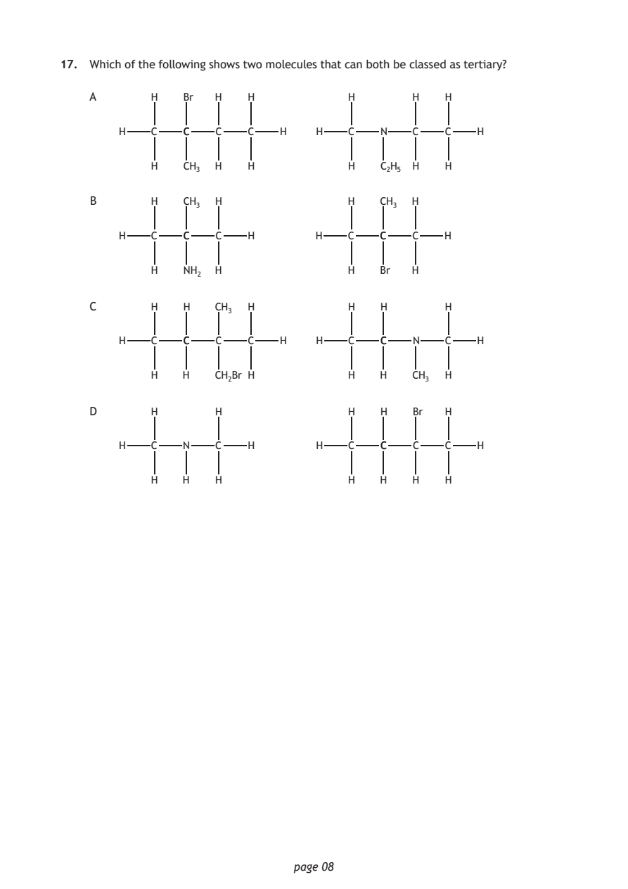
Selectable page text
17. Which of the following shows two molecules that can both be classed as tertiary?
A H Br H H H H H
H C CC C C H H C N C C H
H CH₃ H H H C₂H₅ H H
B H CH₃ H H CH₃ H
H C CC C H H C CC C H
H NH₂ H H Br H
C H H CH₃ H H H H
H C CC C C H H C CC N C H
H H CH₂Br H H H CH₃ H
D H H H H Br H
H C N C H H C CC C C H
H H H H H H H
page 08PDF page 9
Paper 1, Question 18Paper 1, Question 19Paper 1, Question 20Paper 1, Question 21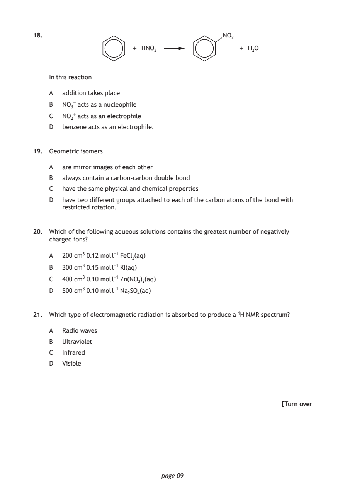
Selectable page text
18. NO₂
+ HNO₃ + H₂O
In this reaction
A addition takes place
B NO₃⁻ acts as a nucleophile
C NO₂⁺ acts as an electrophile
D benzene acts as an electrophile.
19. Geometric isomers
A are mirror images of each other
B always contain a carbon-carbon double bond
C have the same physical and chemical properties
D have two different groups attached to each of the carbon atoms of the bond with
restricted rotation.
20. Which of the following aqueous solutions contains the greatest number of negatively
charged ions?
A 200 cm³ 0.12 mol l⁻¹ FeCl₃(aq)
B 300 cm³ 0.15 mol l⁻¹ KI(aq)
C 400 cm³ 0.10 mol l⁻¹ Zn(NO₃)₂(aq)
D 500 cm³ 0.10 mol l⁻¹ Na₂SO₄(aq)
21. Which type of electromagnetic radiation is absorbed to produce a ¹H NMR spectrum?
A Radio waves
B Ultraviolet
C Infrared
D Visible
[Turn over
page 09PDF page 10
Paper 1, Question 22Paper 1, Question 23Paper 1, Question 24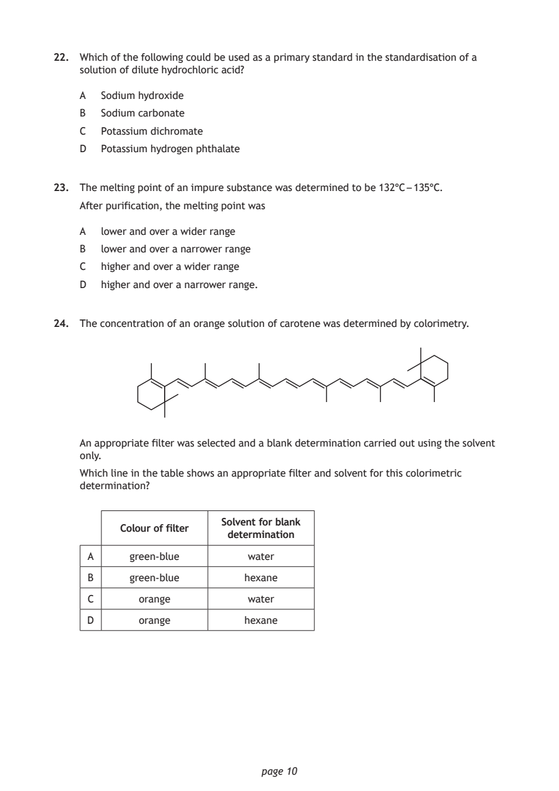
Selectable page text
22. Which of the following could be used as a primary standard in the standardisation of a
solution of dilute hydrochloric acid?
A Sodium hydroxide
B Sodium carbonate
C Potassium dichromate
D Potassium hydrogen phthalate
23. The melting point of an impure substance was determined to be 132°C – 135°C.
After purification, the melting point was
A lower and over a wider range
B lower and over a narrower range
C higher and over a wider range
D higher and over a narrower range.
24. The concentration of an orange solution of carotene was determined by colorimetry.
An appropriate filter was selected and a blank determination carried out using the solvent
only.
Which line in the table shows an appropriate filter and solvent for this colorimetric
determination?
Solvent for blank
Colour of filter
determination
A green-blue water
B green-blue hexane
C orange water
D orange hexane
page 10PDF page 11
Paper 1, Question 25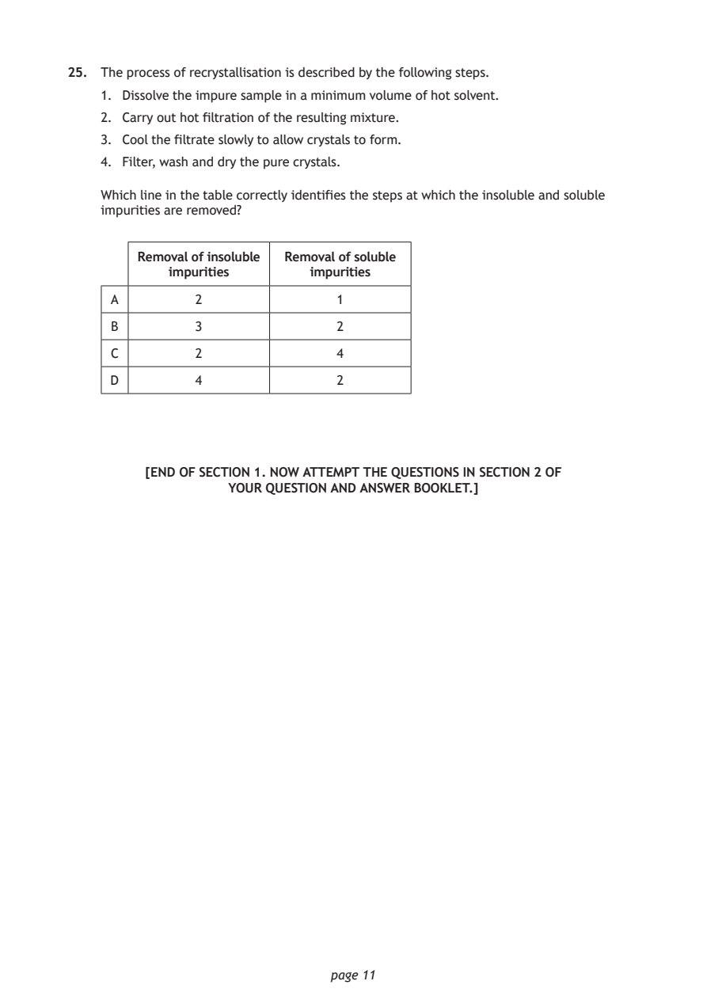
Selectable page text
25. The process of recrystallisation is described by the following steps.
1. Dissolve the impure sample in a minimum volume of hot solvent.
2. Carry out hot filtration of the resulting mixture.
3. Cool the filtrate slowly to allow crystals to form.
4. Filter, wash and dry the pure crystals.
Which line in the table correctly identifies the steps at which the insoluble and soluble
impurities are removed?
Removal of insoluble Removal of soluble
impurities impurities
A 2 1
B 3 2
C 2 4
D 4 2
[END OF SECTION 1. NOW ATTEMPT THE QUESTIONS IN SECTION 2 OF
YOUR QUESTION AND ANSWER BOOKLET.]
page 11PDF page 12
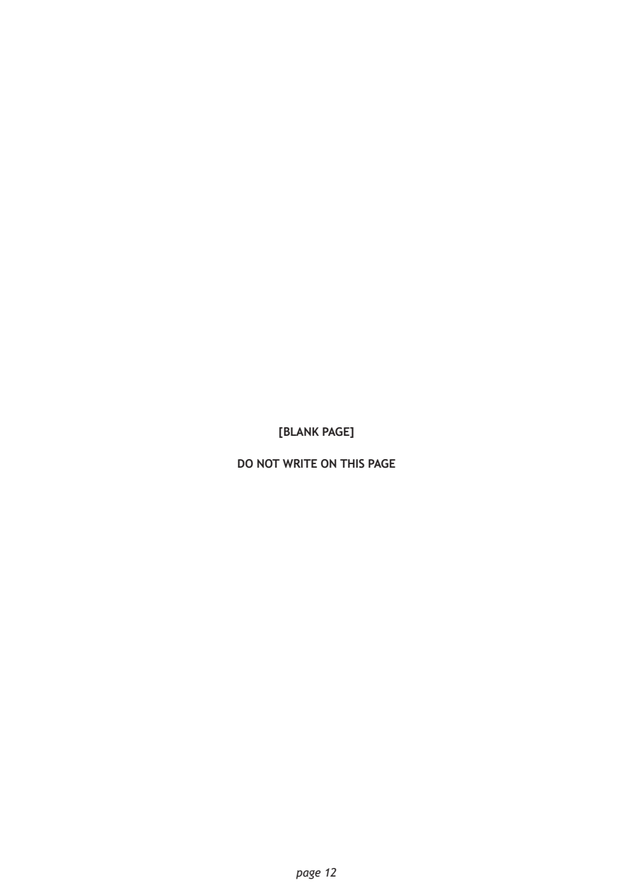
Selectable page text
[BLANK PAGE]
DO NOT WRITE ON THIS PAGE
page 12